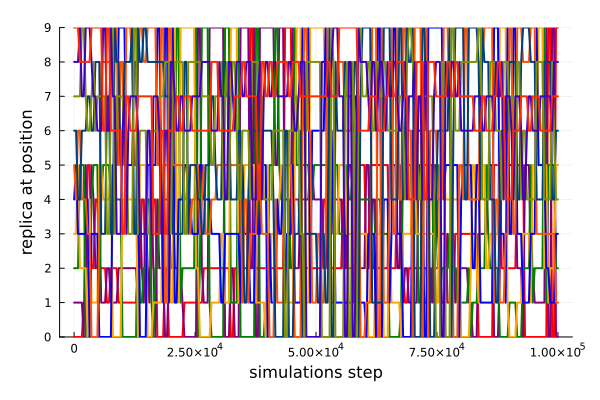
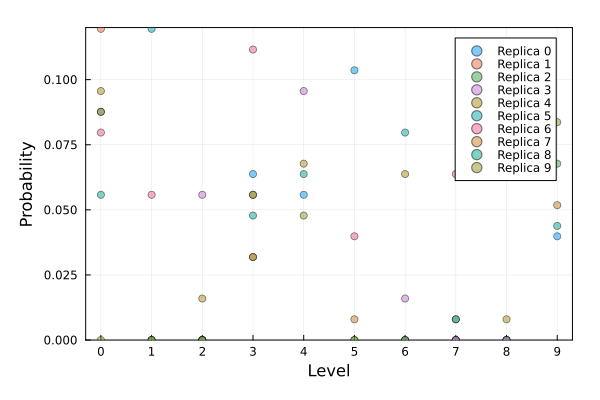

Replica exchange analysis
The remd_data function reads the output of a Gromacs-generated replica-exchange simulation file, and provides some tools for visualization of the quality of the exchange process.
This function was introduced in MolSimToolkit version 1.1.0. The function was tested to read log files produced by Gromacs 2019.3. Compatibility with other versions is not guaranteed (issue reporting and contributions are welcome).
Reading REMD data
First, read the data from the Gromacs simulation log file:
julia> using MolSimToolkit
julia> data = remd_data(MolSimToolkit.hrmed_production_log)where MolSimToolkit.hremd_production_log is an example log file produced by Gromacs.
This will result in a data structure with three fields:
steps: Vector of steps at which the exchange was performed.exchange_matrix: Matrix of exchanges performed. Each row corresponds to a step and each column to a replica.probability_matrix: Matrix of probabilities of finding each replica at level of perturbation. Each column corresponds to a replica and each row to a level of perturbation.
Visualiation of the exchange
A visualiation of the exchange process can be obtained, for example, with:
julia> using Plots
julia> plt = plot(
data.steps, data.exchange_matrix,
label=nothing,
xlabel="simulations step",
ylabel="replica at position",
linewidth=2,
palette = cgrad(:rainbow, rev=true),
margin=0.5Plots.Measures.cm,
ylims=[0, 9], yticks=(0:1:9, 0:1:9),
)The above code will produce the following plot:

An alternative visualization of the exchange process is given by the probability matrix:
julia> scatter(
data.probability_matrix,
labels= Ref("Replica ") .* string.((0:9)'),
framestyle=:box,
linewidth=2,
ylims=(0,0.12), xlims=(0.7, 10.3),
xlabel="Level", xticks=(1:10, 0:9),
ylabel="Probability",
alpha=0.5,
margin=0.5Plots.Measures.cm,
)Which produces:

Ideally, the probability of each replica populaing each level should be the inverse of the number of replicas (here $1/10$). In this case, the simulation does not provide a proper sampling of exchanges, becuse it is a short extract of a longer simulation.
Reference functions
MolSimToolkit.remd_data — Methodremd_data(log::String)Function to read the log file from a (H)REMD simulation performed with Gromacs.
Returns a GromacsHRMEDlog structure, containing the steps at which the exchange was tried, the exchange matrix and the probability matrix. The exchange matrix contains the replica number at each level of perturbation for each step. The probability matrix contains the probability of finding each replica at each level.
Tested with Gromacs version 2019.4 output log.
Example
First obtaina the REMD data from the log file:
julia> using MolSimToolkit
julia> data = remd_data(MolSimToolkit.hrmed_production_log)
Then plot the exchange matrix, which will provide a visual inspection of the exchange process:
julia> using Plots
julia> plt = plot(
data.steps, data.exchange_matrix,
label=nothing,
xlabel="simulations step",
ylabel="replica at position",
linewidth=2,
palette = cgrad(:rainbow, rev=true),
margin=0.5Plots.Measures.cm,
ylims=[0, 9], yticks=(0:1:9, 0:1:9),
)An alternative visualization of the exchange process is given by the probability matrix:
julia> scatter(
data.probability_matrix,
labels= Ref("Replica ") .* string.((0:9)'),
framestyle=:box,
linewidth=2,
ylims=(0,0.12), xlims=(0.7, 10.3),
xlabel="Level", xticks=(1:10, 0:9),
ylabel="Probability",
alpha=0.5,
margin=0.5Plots.Measures.cm,
)MolSimToolkit.GromacsHRMEDlog — TypeGromacsRMEDlogStructure to store the log from a REMD simulation performed with Gromacs. This structure contains three fields:
steps: Vector of steps at which the exchange was performed.exchange_matrix: Matrix of exchanges performed. Each row corresponds to a step and each column to a replica.probability_matrix: Matrix of probabilities of finding each replica at level of perturbation. Each column corresponds to a replica and each row to a level of perturbation.